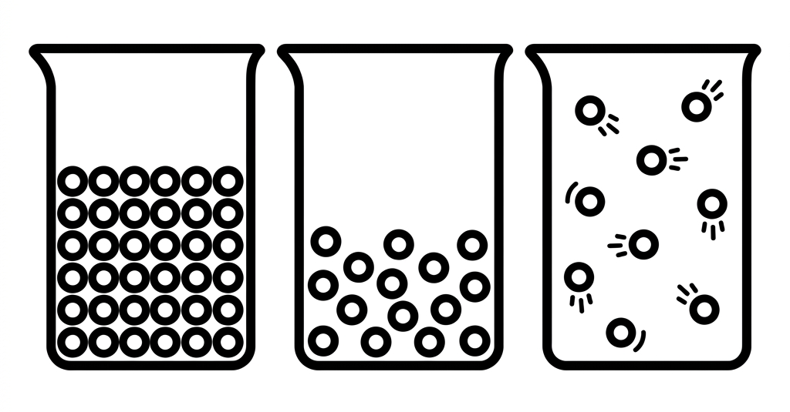
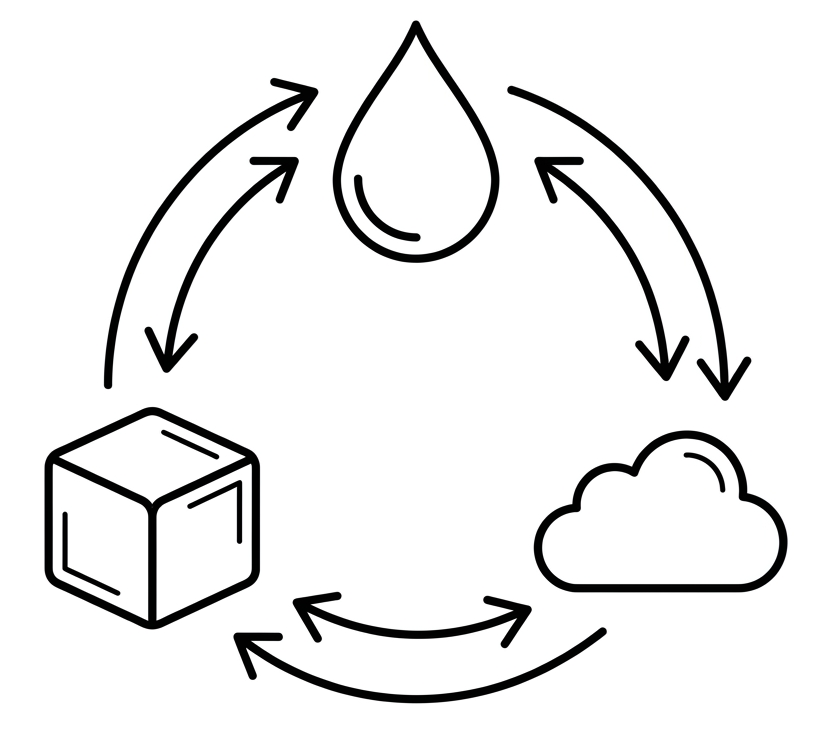

Vardaan Learning Institute
Physics • Chapter Notes
🌐 vardaanlearning.com
📞 9508841336
MATTER
1. Introduction to Matter
In our daily lives, we are surrounded by a variety of living and non-living things. Everything we see around us, such as water, air, books, plants, and even ourselves, is made up of matter.
Definition
Matter is defined as anything that occupies space, has mass, and can be perceived by our senses.
Composition of Matter
- In ancient times, Indian philosophers believed that matter was made of five basic elements (Panch tatvas): air (vayu), fire (tejas/agni), water (jal), earth (prithvi), and sky (akash).
- Maharishi Kanada, an ancient Indian sage, was among the first to suggest that matter is composed of tiny, indivisible particles called Anu or Parmanu.
- Today, it is scientifically established that all matter is composed of extremely tiny particles known as molecules.
Definition
A molecule is the smallest particle of matter that can exist independently and freely while retaining all the physical and chemical properties of that substance.
2. Characteristics of Molecules (Kinetic Theory)

The Kinetic Theory of Matter helps us understand the behavior and arrangement of molecules in different states. The core characteristics of molecules are:
3. States of Matter
The state of a substance—whether it is a solid, liquid, or gas—is determined by three main properties: Intermolecular space, Intermolecular force of attraction, and the Kinetic energy of the molecules.
1. Solids
- Molecular Arrangement: Molecules are tightly packed together.
- Intermolecular Force: Very strong.
- Intermolecular Space: Negligible / very small.
- Shape and Volume: They have a definite shape and a definite volume. They are rigid and cannot be compressed easily.
- Examples: Wood, iron, ice, stone.
2. Liquids
- Molecular Arrangement: Molecules are loosely packed compared to solids. They can slide over one another.
- Intermolecular Force: Moderate (weaker than solids, stronger than gases).
- Intermolecular Space: Moderate.
- Shape and Volume: They have a definite volume but no definite shape. They take the shape of the container they are poured into and can flow.
- Examples: Water, milk, oil, alcohol.
3. Gases
- Molecular Arrangement: Molecules are very wide apart and move freely in all random directions.
- Intermolecular Force: Negligible / almost zero.
- Intermolecular Space: Very large.
- Shape and Volume: They have neither a definite shape nor a definite volume. They fill the entire space available to them and are highly compressible.
- Examples: Oxygen, hydrogen, carbon dioxide, steam.
4. Change of State of Matter
Matter can change from one physical state to another by changing its temperature (heating or cooling). This process of changing from one state to another at a constant temperature by absorbing or rejecting heat is called a change of state.
Key Processes in Change of State:

- Melting (or Fusion): The process in which a solid changes into a liquid on heating. The fixed temperature at which this occurs is called the Melting Point (e.g., Ice melts at 0°C).
- Freezing: The process in which a liquid changes into a solid on cooling. The fixed temperature is called the Freezing Point (e.g., Water freezes at 0°C). Note: For a specific substance, the melting point and freezing point are exactly the same.
- Boiling (or Vaporization): The rapid change of a liquid into a gas (or vapor) on heating at a constant temperature. This fixed temperature is the Boiling Point (e.g., Water boils at 100°C).
- Condensation: The change from a gaseous state to a liquid state on cooling at a constant temperature. This is the Condensation Point.
- Sublimation: The direct change of a solid into a gas on heating, without passing through the liquid state (e.g., Camphor, Naphthalene balls, Dry ice, Iodine).
- Deposition (or Solidification): The reverse of sublimation; the direct change of a gas into a solid on cooling, without becoming a liquid.
Important
Latent Heat (Hidden Heat):
During a change of state (like melting or boiling), the temperature of the substance remains constant, even though heat is continuously supplied. This heat energy is used exclusively to overcome the intermolecular forces of attraction, pulling the molecules apart. Since it does not increase the kinetic energy (which would raise the temperature), it is called Latent or 'Hidden' heat.
5. Evaporation and Its Effects
Evaporation is the slow, gradual process by which a liquid changes into its vapor state at all temperatures from the surface of the liquid.
Evaporation vs. Boiling
- Temperature: Evaporation occurs at all temperatures, whereas boiling occurs only at a specific fixed temperature (boiling point).
- Location: Evaporation is a surface phenomenon (happens only at the top surface), while boiling is a bulk phenomenon (bubbles form throughout the liquid).
- Speed: Evaporation is a slow and silent process; boiling is a rapid and violent process.
Factors Affecting the Rate of Evaporation:
- Temperature of the Liquid: Higher temperature means higher kinetic energy for molecules. Thus, the rate of evaporation increases with an increase in temperature (e.g., clothes dry faster on a hot summer day).
- Area of Exposed Surface: Evaporation is a surface phenomenon. A larger surface area allows more molecules to escape, increasing the rate of evaporation (e.g., tea cools faster in a wide saucer than in a narrow cup).
- Nature of the Liquid: Volatile liquids (like alcohol, petrol, ether, and perfumes) have weaker intermolecular forces. They evaporate much faster than water.
- Wind Speed (Air flow): Moving air carries away the escaped vapor molecules from the surface, making room for more molecules to evaporate. High wind speed increases the evaporation rate.
- Humidity: Humidity is the amount of moisture present in the air. Dry air can hold more water vapor, so evaporation is faster on a dry day than on a highly humid or rainy day.
Concept
Why does Evaporation cause Cooling?
When liquid molecules evaporate, they need energy (heat) to break free from the intermolecular forces holding them together. They absorb this required heat energy from the remaining liquid or the surrounding surface. As a result, the surrounding object loses heat and gets cooled. For example, sweating cools our body, and a few drops of alcohol on the palm feel intensely cold as they evaporate.